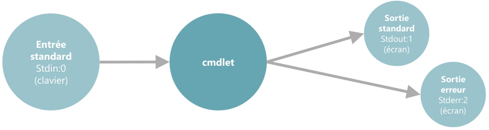
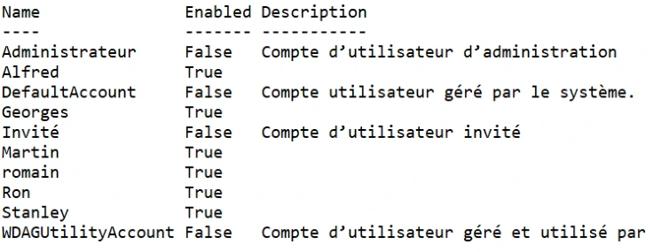
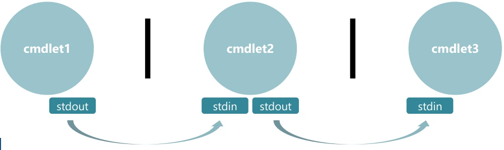
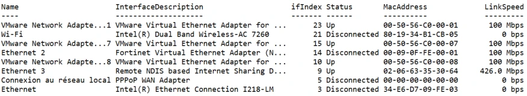
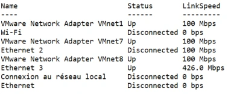
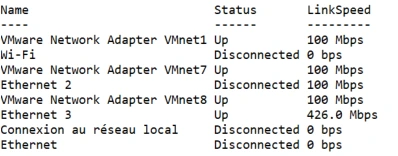
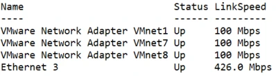
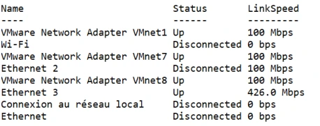
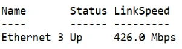

Module 11 — Plus loin avec PowerShell¶
La transcription du support Drive et l’aide pédagogique sont séparées pour rendre leur provenance explicite.
SOURCE DRIVE · TRANSCRIPTION DU SUPPORT
Le contenu des documents du dossier TSSR est transcrit ci-dessous, page par page. Les textes et tableaux sont intégrés à la page Web. Aucun fichier PDF, aucune diapositive entière ni aucune reproduction de page n’est affiché. Seuls des croquis ou visuels isolés et vérifiés peuvent accompagner la transcription. Les versions et les consignes restent celles des supports de formation. Les compléments IA sont conservés dans leur onglet distinct.
Support · Module 11 - Support de cours · 12 pages transcrites
Plus loin avec PowerShell
Systèmes clients Microsoft — Module 11.
Objectifs
- Savoir rediriger les flux des cmdlets.
- Utiliser le pipeline.
- Filtrer puis formater le résultat.
Plus loin avec PowerShell
- Redirection de flux.
- Le pipeline.
- Filtrer l’affichage d’un résultat.
Redirection
Une cmdlet :
- reçoit des paramètres par l’entrée standard (
stdin:0), par défaut le clavier ; - fournit des résultats sur la sortie standard (
stdout:1), par défaut l’écran ; - affiche éventuellement les erreurs sur la sortie standard (
stderr:2), par défaut l’écran.
Le schéma relie l’entrée standard (clavier) à la cmdlet, puis la cmdlet à la sortie standard et à la sortie erreur (écran).


Redirection
| Flux | Syntaxe du support | Effet |
|---|---|---|
| Sortie standard | Cmdlet > fichier ou Cmdlet 1>fichier |
Redirige le flux de sortie standard vers « fichier ». |
| Sortie standard | Cmdlet >> fichier ou Cmdlet 1>> fichier |
Redirige le flux de sortie standard à la fin de « fichier ». |
| Sortie d’erreur | Cmdlet 2> fichier.err |
Redirige le flux de sortie d’erreur vers fichier.err. |
| Sortie d’erreur | Cmdlet 2>> fichier.err |
Redirige le flux de sortie d’erreur à la fin de fichier.err. |
| Les deux flux | Cmdlet > fichier 2>&1 |
Redirige le flux de sortie standard et le flux de sortie d’erreur dans « fichier ». |
| Sortie d’erreur | Cmdlet 2>$null |
Redirige le flux de sortie d’erreur « dans le vide ». |
Exemple de redirection dans un fichier :
Get-LocalUser > c:\temp\LocalUserList.txt
Lecture du fichier :
Get-Content c:\temp\LocalUserList.txt
La capture présente les colonnes Name, Enabled, Description de la liste d’utilisateurs locaux.


Démonstration
Pipeline
- Déjà utilisé avec
Select-Object, le pipeline transmet le résultat de la sortie standard d’une cmdlet dans l’entrée standard d’une autre cmdlet. - Enchaînement de cmdlets possible.
Le schéma montre cmdlet1 | cmdlet2 | cmdlet3 avec les liaisons stdout vers stdin.


Pipeline
- Utilisé pour fournir un jeu restreint de propriétés.
- Exemple avec
Get-NetAdaptersans paramètre ni argument, qui affiche certaines propriétés.
Get-NetAdapter
Get-NetAdapter | Select Name,Status,LinkSpeed
Les captures montrent d’abord les propriétés par défaut, puis les colonnes Name, Status, LinkSpeed. Elles comprennent des interfaces VMware, Wi-Fi et Ethernet, avec des états Up ou Disconnected et des débits propres à l’exemple.
Démonstration




Filtrage
- Les objets fournis par le pipeline sont parfois nombreux.
- Mettre en place le filtrage pour ne garder que les propriétés nécessaires.
- Prérequis : connaître les opérateurs de comparaison. Par défaut insensibles à la casse ; les préfixer de
cpour les rendre sensibles. Get-Help About_Comparison_Operator.
| Comparaison | Insensibilité à la casse | Sensibilité à la casse |
|---|---|---|
| Égalité | -eq |
-ceq |
| Inégalité | -ne |
-cne |
| Supérieur à | -gt |
-cgt |
| Supérieur ou égal à | -ge |
-cge |
| Inférieur à | -lt |
-clt |
| Inférieur ou égal à | -le |
-cle |
| Comparaison d’égalité d’expression | -like |
-clike |
| Comparaison d’inégalité d’expression | -notlike |
-cnotlike |
Filtrage basique
- Ne peut filtrer qu’une seule propriété.
- Nécessite la cmdlet
Where-Object.
Exemple :
Get-NetAdapter | select Name,Status,LinkSpeed
Get-Netadapter | Select Name,Status,LinkSpeed | Where Status –like Up
Dans les captures du support, le filtrage conserve les interfaces dont Status vaut Up.
Démonstration




Filtrage avancé
- Pour filtrer plusieurs propriétés.
- Nécessite aussi la cmdlet
Where-Object. - Nécessite un script de filtrage
–FilterScript {}dans la cmdletWhere-Object. - Possibilité d’utiliser la variable
$PSITEMou$_pour être plus productif. $_contient tous les objets transmis àWhere-Object.
Exemple :
Get-NetAdapter | select Name,Status,LinkSpeed
Get-NetAdapter | select Name,Status,LinkSpeed | Where –FilterScript {$_.Status –like "Up" –and $_.LinkSpeed –gt "100 Mbps"}
La capture du résultat présente Ethernet 3, Up, 426.0 Mbps.




Démonstration
Formatage
- Par défaut, PowerShell « formate » les résultats des cmdlets avant de les afficher à l’écran.
- Le format des résultats peut être modifié à l’aide de
Format-List,Format-Table,Format-Wide. - Les cmdlets
Format-*sont à réaliser en dernier lieu, « après avoir terminé le travail ».
Formatage
Affichage sous forme de liste
Get-Service | format-List
Get-Service | format-List –Property *
Get-service | FL –Property Name,Status,DisplayName
Get-Service | select Name,Status,DisplayName | FL
Les deux dernières commandes sont équivalentes.
Affichage sous forme de tableau
Get-TimeZone | Format-Table
Get-TimeZone | Format-Table –Property *
Get-TimeZone | FT –Property StandardName,BaseUtcOffset -autosize
Affichage sous forme de liste élargie
- Afficher une liste sur une ou plusieurs colonnes.
- Une seule propriété de la collection d’objets est sélectionnée.
Get-Process | Format-Wide
Get-Process | Format-Wide –Property ID
Get-Process | FW –Property ID –column 5
Get-Process | FW –Property ID -autosize
Démonstration
TP
Conclusion
- Maîtriser PowerShell, l’essence même d’un technicien moderne.
- Aller plus loin, être curieux.
- S’éveiller au scripting PowerShell.
Référence du document : 1HamKlfbV8ZYxo2PhljLtcWWvX1nH9WCF · SHA-256 4fba04cb03a40c65…
Énoncé · Enonc‚ du TP - PowerShell redirection, pipeline, filtrage, formatage · 5 pages transcrites
Redirection, pipeline, filtrage, formatage
TP du Module 11 — Plus loin avec PowerShell. Durée estimée : 2 heures.
L’objectif sera de répondre aux consignes, notamment en les traduisant du français en langage PowerShell.
Pour arriver à vos fins, n’oubliez pas les bonnes pratiques :
- utilisez
get-commandpour rechercher la bonne cmdlet ; - utilisez
get-helppour savoir comment elle fonctionne ; - si des propriétés spécifiques sont demandées, utilisez
selectaprès le pipeline ; - si une ou des valeurs sont spécifiées, utilisez le pipe
whereet éventuellement la syntaxe du filtrage avancé pour rechercher deux valeurs ou plus ; - utilisez les commandes de formatage si la consigne le précise ;
- prenez votre temps et investissez du temps de lecture du
get-help.
Énoncé
Lisez l’ensemble de cet atelier avant de vous lancer dans la pratique.
Sur Win10-XX, recherchez les commandes adaptées : affichez la date du jour puis, à l’aide de la même commande, le quantième de l’année, c’est-à-dire le numéro du jour de l’année.
Évènements et pare-feu
- Affichez la liste des évènements enregistrés dans le journal Security.
- À l’aide de la commande précédente, affichez les évènements dont l’EventID est 4624.
- Affichez la liste précédente en ne montrant que l’EventID, la date d’écriture de l’évènement et le message.
- Affichez la liste des règles de pare-feu activées.
Pare-feu et volumes
Parmi les règles de pare-feu activées, n’affichez que leurs noms, le profil réseau auquel elles appartiennent, leurs directions et si elles autorisent ou bloquent l’accès.
Afficher des propriétés selon plusieurs critères
Sur Discovery :
- Affichez la liste des volumes disques.
- Affichez la liste des volumes qui possèdent plus de 8 Go d’espace libre.
- Affichez la liste des volumes dont la taille maximum ne dépasse pas 25 Go.
Volumes, services et groupes
- Affichez la liste des volumes qui possèdent plus de 8 Go d’espace libre et dont la taille maximale ne dépasse pas 25 Go.
- Le résultat de la commande précédente ne devra afficher que le nom, la lettre de lecteur et le type de système de fichier, le tout sous forme de liste.
- Affichez les noms et statuts des services actuellement démarrés et qui démarrent automatiquement au lancement du système d’exploitation.
- Affichez les membres, et leur SID, du groupe L_HA_Ventes.
Partages, CD-ROM et imprimante
- Affichez le nom et le chemin des partages administratifs sous forme de liste.
- Affichez la lettre de lecteur, le type de lecteur et l’état de santé des volumes dont l’état est sain et de type CD-ROM.
- Affichez le nom, le type, le nom du pilote et le nom du partage de l’imprimante HP LaserJet. Le résultat sera affiché sous forme de liste.
Solution
Une solution est proposée pour ce TP sous la forme d’un PDF commenté, disponible dans les ressources à télécharger.
Référence du document : 1aiTSranU5ERDjDPk9aKXZKqnXCbubWxp · SHA-256 9ed320b7fe165ff5…
Correction · Solution du TP - PowerShell redirection, pipeline, filtrage, formatage · 3 pages transcrites
Correction originale : à consulter après avoir tenté l’exercice.
Redirection, pipeline, filtrage, formatage — proposition de solution
TP du Module 11 — Plus loin avec Powershell.
Sur Win10-XX, recherchez les commandes adaptées pour les besoins suivants.
Affichez la date du jour, puis, à l’aide de la même commande, affichez le quantième de l’année (le numéro du jour de l’année)
Get-Date
Get-Date | Select DayOfYear
Affichez la liste des évènements ayant été enregistrés dans le journal Security
Get-EventLog -LogName Security
Et il y en a beaucoup !
À l’aide de la commande précédente, affichez les évènements dont l’EventID est 4624
Get-EventLog -LogName Security | Where EventID -eq 4624
Affichez la liste précédente en ne montrant que l’EventID, la date d’écriture de l’évènement et le message
Get-EventLog -LogName Security | Where EventID -eq 4624 | Select EventID,TimeWritten,Message
Affichez la liste des règles de pare-feu activées
Get-NetFirewallRule | Where Enabled -like 'True'
Ou :
Get-NetFirewallRule -Enabled True
Parmi ces règles de pare-feu activées, n’affichez que leurs noms, le profil réseau à laquelle elles appartiennent, leurs directions et si elles autorisent ou bloquent l’accès
Get-NetFirewallRule | Where Enabled -like 'true' | Select DisplayName,Profile,Direction,Action
Afficher des propriétés selon plusieurs critères
Sur Discovery, affichez la liste des volumes disques :
Get-Volume
Affichez la liste des volumes qui possèdent plus de 8 Go d’espace libre :
Get-Volume | Where SizeRemaining -gt "8GB"
Get-Volume | Where SizeRemaining -gt 8589934592
8589934592 = 8 x 1024 x 1024 x 1024.
Affichez la liste des volumes dont la taille maximum ne dépasse pas 25 Go :
Get-Volume | Where Size -lt '25GB'
Get-Wolume | where Size -lt 26843545600
Affichez la liste des volumes qui possèdent plus de 8 Go d’espace libre et dont la taille maximale ne dépasse pas 25 Go :
Get-Volume | Where -Filterscript {$_.sizeremaining -gt '8GB' -and $_.size -lt '25GB'}
Le résultat de la commande précédente ne devra afficher que le nom, la lettre de lecteur et le type de système de fichier… le tout sous forme de liste :
Get-Volume | Where -Filterscript {$_.SizeRemaining -gt '8GB' -and $_.Size -lt '25GB'} | FL FileSystemLabel,DriveLetter,FileSystemType
Affichez les noms et status des services qui sont actuellement démarrés et qui démarrent automatiquement au lancement du système d’exploitation :
Get-Service | Where -FilterScript {$_.Status -like "Running" -and $_.StartType -like "Automatic"} | Select Name,Status
Affichez les membres (et leur SID) du groupe L_HA_Ventes :
Get-LocalGroupMember L_HA_Ventes | Select Name,SID
Affichez le nom et le chemin des partages administratifs sous forme de liste :
Get-SMBShare | Select Name,Path | Where Name -like *$
Affichez la lettre de lecteur, le type de lecteur et l’état de santé des volumes dont l’état est sain et de type CD-ROM :
Get-Volume | Where -FilterScript {$_.DriveType -eq 'CD-ROM' -and $_.HealthStatus -eq 'Healthy'} | Select DriveLetter,DriveType,HealthStatus
Affichez le nom, le type, le nom du pilote et le nom du partage de l’imprimante HP LaserJet. Le résultat sera affiché sous la forme d’une liste :
Imprimante HP LaserJet — commande
Get-Printer -Name *Laser* | FL Name,Type,DriverName,ShareName
Référence du document : 124nAOUzJnaB_U-6kCzYbo32duYLrUdif · SHA-256 395fc3a2f586e25a…
Complément IA / externe au cours — fiche pédagogique du portail
Cette fiche contient une reformulation et des aides d’apprentissage rédigées par IA. Elle est distincte de la transcription des documents du Drive et ne la remplace pas. Les schémas de synthèse de cette fiche sont des illustrations IA / externes au cours, sauf les captures explicitement attribuées à un document source.
Séquence : Systèmes clients Microsoft
Démarche : produire des objets, filtrer, sélectionner, puis présenter ou rediriger le résultat.
Objectifs¶
- Rediriger la sortie de succès et les erreurs d’une commande.
- Enchaîner des cmdlets avec le pipeline.
- Utiliser les opérateurs de comparaison et les filtres simples ou composés.
- Choisir un format d’affichage et traiter chaque consigne du TP.
1. Flux et redirections¶
Le support emploie le modèle stdin 0 (clavier), stdout 1 (écran) et stderr 2 (écran) pour introduire les échanges d’une commande.
Complément externe — précision PowerShell
Ce dessin est une introduction issue des shells classiques. Dans PowerShell, le pipeline transmet des objets, et son entrée n’est pas le flux stdin. Les flux redirigeables 1 et 2 correspondent au succès et aux erreurs. Référence Microsoft sur la redirection.
| Opérateur | Destination et comportement |
|---|---|
> ou 1> |
Écrire la sortie de succès dans un fichier en remplaçant son contenu. |
>> ou 1>> |
Ajouter la sortie de succès à la fin du fichier. |
2> |
Écrire les erreurs dans un fichier en remplaçant son contenu. |
2>> |
Ajouter les erreurs à la fin du fichier. |
2>&1 |
Fusionner les erreurs dans le flux de succès. |
2>$null |
Écarter les erreurs affichées. |
Toutes les formes montrées dans le support :
Cmdlet > fichier
Cmdlet 1> fichier
Cmdlet >> fichier
Cmdlet 1>> fichier
Cmdlet 2> fichier.err
Cmdlet 2>> fichier.err
Cmdlet > fichier 2>&1
Cmdlet 2>$null
Cmdlet et fichier sont les noms génériques du tableau, pas une commande à lancer telle quelle.
Exemple du module : écrire puis lire les utilisateurs locaux¶
Le dossier doit exister. Le fichier contient le résultat affiché, avec notamment Name, Enabled et Description dans la capture de formation.
2. Pipeline et sélection de propriétés¶
Le caractère | relie la sortie d’une commande à la suivante. Select-Object, abrégé Select, permet de projeter les propriétés utiles :
La première commande utilise l’affichage par défaut ; la seconde conserve Name, Status, LinkSpeed.
Illustration IA / externe au cours — chaîne de traitement des objets.
3. Comparaisons et filtrage¶
| Comparaison | Insensible à la casse | Sensible à la casse |
|---|---|---|
| Égalité | -eq |
-ceq |
| Différence | -ne |
-cne |
| Supérieur | -gt |
-cgt |
| Supérieur ou égal | -ge |
-cge |
| Inférieur | -lt |
-clt |
| Inférieur ou égal | -le |
-cle |
| Correspondance de motif | -like |
-clike |
| Absence de correspondance | -notlike |
-cnotlike |
Le préfixe c concerne la casse lors de comparaisons de chaînes. Lire l’aide des opérateurs :
Filtre simple¶
La syntaxe simplifiée exprime ici une condition sur Status.
Filtre avancé¶
Where-Object -FilterScript { ... } permet de combiner les conditions ; $_ et $PSItem désignent l’objet actuellement traité. Le support présente :
Get-NetAdapter | Select-Object Name,Status,LinkSpeed |
Where-Object -FilterScript {
$_.Status -like 'Up' -and $_.LinkSpeed -gt '100 Mbps'
}
Le résultat illustré est Ethernet 3, Up, 426.0 Mbps.
Lecture critique de l’exemple source
Comparer une chaîne affichée telle que 100 Mbps n’est pas une comparaison fiable de débits numériques. Ce résultat appartient à la démonstration du support. Avant un filtre de production, contrôler le type et l’unité de la propriété, puis comparer des valeurs numériques cohérentes. Les tirets typographiques de la transcription source sont remplacés par des tirets ASCII dans les commandes de cette fiche.
4. Formater en dernier¶
PowerShell prépare automatiquement l’affichage. Les commandes de formatage permettent de le choisir ; elles s’emploient après le travail sur les objets.
| Commande | Alias | Usage |
|---|---|---|
Format-List |
FL |
Une liste de propriétés par objet. |
Format-Table |
FT |
Une ligne par objet et plusieurs colonnes. |
Format-Wide |
FW |
Une propriété distribuée sur une ou plusieurs colonnes. |
Tous les exemples d’affichage du support¶
Get-Service | Format-List
Get-Service | Format-List -Property *
Get-Service | FL -Property Name,Status,DisplayName
Get-Service | Select-Object Name,Status,DisplayName | FL
Get-TimeZone | Format-Table
Get-TimeZone | Format-Table -Property *
Get-TimeZone | FT -Property StandardName,BaseUtcOffset -AutoSize
Get-Process | Format-Wide
Get-Process | Format-Wide -Property ID
Get-Process | FW -Property ID -Column 5
Get-Process | FW -Property ID -AutoSize
Les deux sélections de Name,Status,DisplayName sont équivalentes pour l’affichage demandé. Un Format-* placé trop tôt empêche de poursuivre normalement les filtres sur les objets d’origine.
5. TP complet : traduire une consigne en pipeline¶
Durée source : 2 h. Machines : Win10-XX puis Discovery pour les volumes. Les noms de groupes, imprimantes et propriétés viennent du laboratoire.
Méthode : rechercher avec Get-Command, lire Get-Help, identifier les objets, filtrer les valeurs, sélectionner les propriétés, puis formater si demandé.
A. Date et journal Security¶
Date du jour puis numéro du jour dans l’année :
Liste du journal Security, filtre sur 4624, puis EventID, TimeWritten, Message :
Get-EventLog -LogName Security
Get-EventLog -LogName Security | Where-Object EventID -eq 4624
Get-EventLog -LogName Security | Where-Object EventID -eq 4624 |
Select-Object EventID,TimeWritten,Message
Ces commandes reprennent le TP Windows PowerShell du support. Adapter les privilèges au journal consulté ; la fiche ne suppose pas que toutes les commandes historiques existent dans toutes les versions de PowerShell.
B. Règles de pare-feu actives¶
Deux formes données par la correction :
N’afficher ensuite que le nom, le profil, la direction et l’action :
Get-NetFirewallRule | Where-Object Enabled -like 'True' |
Select-Object DisplayName,Profile,Direction,Action
C. Volumes et seuils¶
Get-Volume
Get-Volume | Where-Object SizeRemaining -gt '8GB'
Get-Volume | Where-Object SizeRemaining -gt 8589934592
La correction convertit 8 × 1024 × 1024 × 1024 = 8 589 934 592 octets. Elle utilise les formes suivantes pour 25 Go :
Puis les deux critères, et le format liste :
Get-Volume | Where-Object -FilterScript {
$_.SizeRemaining -gt '8GB' -and $_.Size -lt '25GB'
}
Get-Volume | Where-Object -FilterScript {
$_.SizeRemaining -gt '8GB' -and $_.Size -lt '25GB'
} | Format-List FileSystemLabel,DriveLetter,FileSystemType
Écarts du document source et choix pédagogique
La correction contient Get-Wolume : c’est une coquille, conservée dans Cours Original ; la commande est Get-Volume. Elle utilise -lt alors que « ne dépasse pas 25 Go » signifie inférieur ou égal. Pour répondre littéralement à l’énoncé, employer -le 25GB dans les filtres de taille. -gt 8GB reste correct pour « plus de 8 Go ». La notation PowerShell GB du TP repose ici sur des multiples de 1024.
D. Services automatiques et membres du groupe¶
Services Running dont le démarrage est Automatic, puis membres et SID de L_HA_Ventes :
Get-Service | Where-Object -FilterScript {
$_.Status -like 'Running' -and $_.StartType -like 'Automatic'
} | Select-Object Name,Status
Get-LocalGroupMember L_HA_Ventes | Select-Object Name,SID
E. Partages administratifs¶
La correction sélectionne les noms se terminant par $. L’énoncé demande une liste : ajouter le formatage final.
Le motif est mis entre guillemets pour une lecture explicite ; l’Original conserve l’écriture *$ du document.
F. Volumes CD-ROM sains¶
Get-Volume | Where-Object -FilterScript {
$_.DriveType -eq 'CD-ROM' -and $_.HealthStatus -eq 'Healthy'
} | Select-Object DriveLetter,DriveType,HealthStatus
G. Imprimante HP LaserJet¶
Nom, type, pilote et partage sous forme de liste :
Un résultat vide peut être cohérent avec une ressource absente du laboratoire ; ne pas fabriquer un périphérique ou des valeurs pour remplir la réponse.
Mini-quiz¶
- Quelle différence entre
>et>>? - Que désigne
$_dansWhere-Object? - Pourquoi formater à la fin du pipeline ?
- Quel opérateur traduit « ne dépasse pas 25 Go » ?
- Quelle différence entre
Select-ObjectetWhere-Object?
Réponses
- Remplacement du fichier contre ajout à la fin.
- L’objet en cours de traitement.
- Pour terminer les sélections et filtres sur les objets avant leur présentation.
-le 25GBdans le contexte d’unités du TP.- Select choisit les propriétés ; Where retient les objets qui satisfont la condition.
M11 — Plus loin avec PowerShell
20 questions
Teste tes connaissances sur ce module.